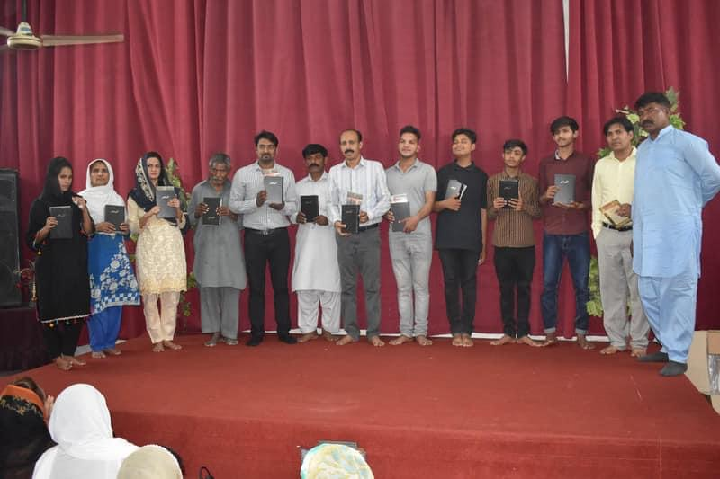
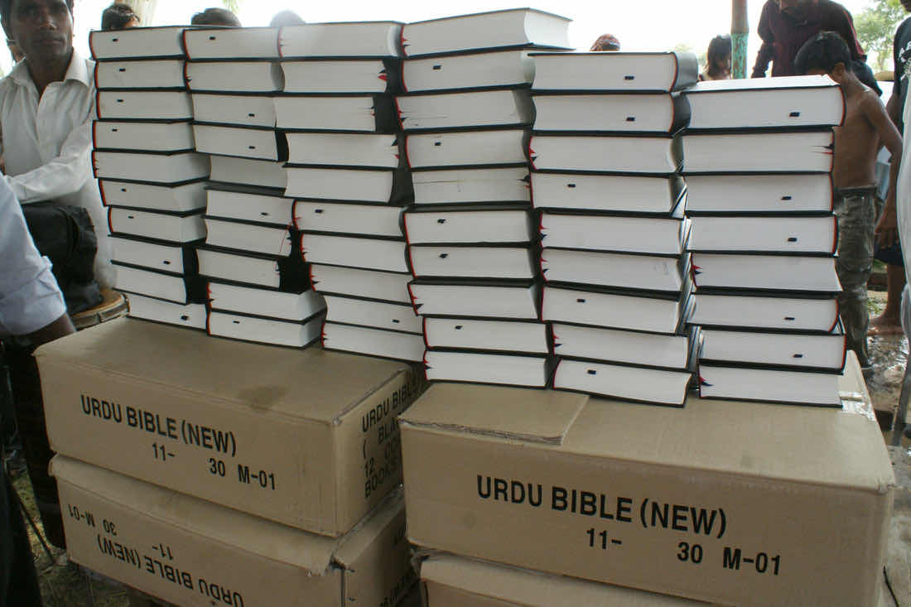
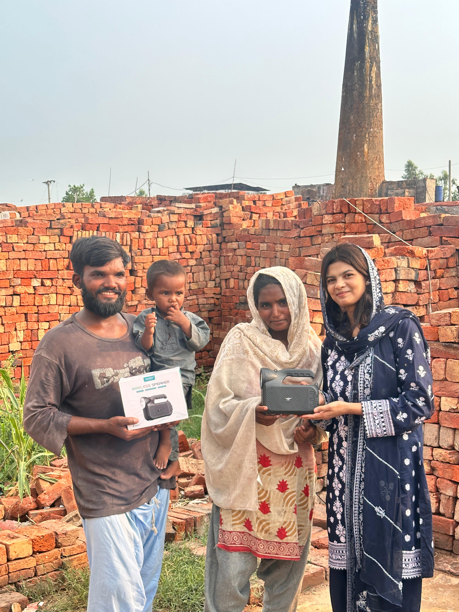
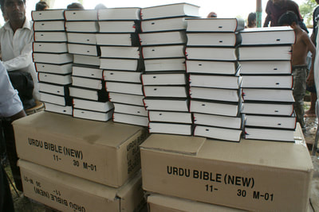
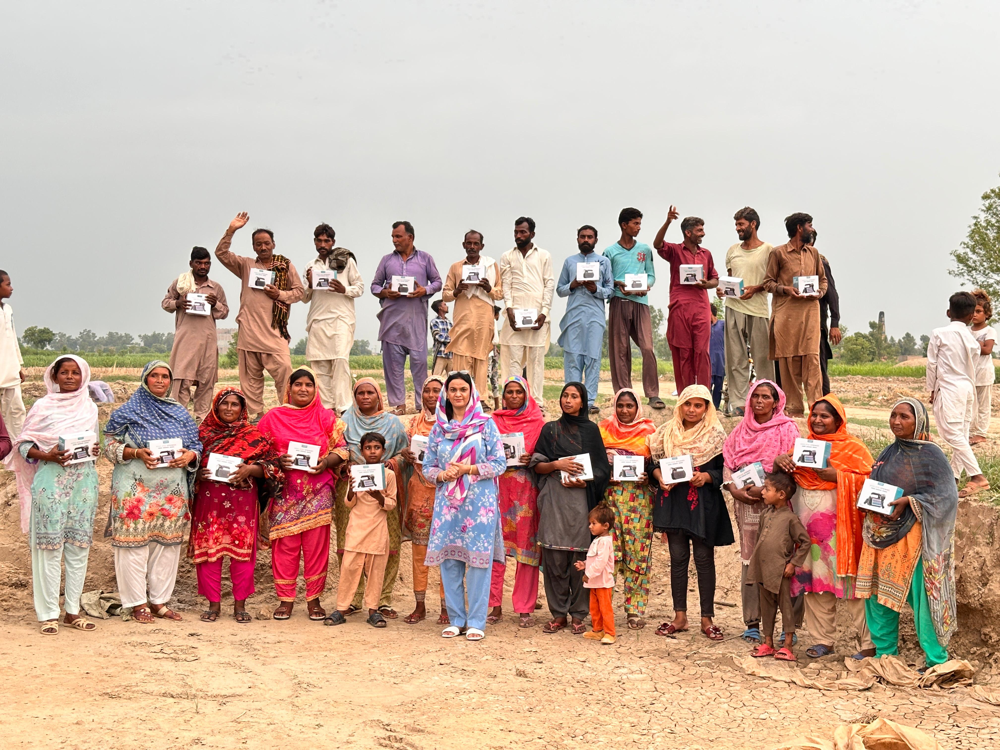

SHARING SMILES
HOPE BEHIND EVERY SMILE
HOPE BEHIND EVERY SMILE
Bible Distribution
The Bible is transforming lives every day. Through our Bible Distribution ministry, Sharing Smiles Pakistan provides written and audio Bibles to believers, seekers, pastors, church planters, and communities where access to Scripture is limited.
Every Bible distributed is an opportunity for someone to encounter the truth, hope, and salvation found in Jesus Christ.
Scripture in Action



Why Bible Distribution?
Many believers in Pakistan do not own a personal Bible. Some churches share only a few copies among entire congregations, while new believers often struggle to access Scripture in their own language.
Without God's Word, spiritual growth becomes difficult. A Bible in someone's hands can impact an entire family and community.
How We Distribute Bibles
Providing printed Bibles to churches, pastors, and believers.
Reaching people who cannot read or who live in remote communities.
Where the Need Is Greatest
Many rural villages and underserved communities have little access to Christian literature and discipleship resources.
Through our network of indigenous missionaries and church planters, we identify areas where the need is greatest and ensure that Bibles reach those who need them most.


Audio Bible Ministry
For many Christians in Pakistan, illiteracy makes it difficult to read and study the Bible. Audio Bibles provide a practical and life-changing solution, allowing believers to hear God's Word in their own language and grow in their faith.
Through these devices, individuals and families can listen to Scripture anytime and anywhere, deepening their understanding of God's truth and strengthening their relationship with Jesus Christ.
Lives Changed Through Scripture
“When I received my first Bible, I began reading it every day. God's Word strengthened my faith and helped me understand who Jesus truly is.”
— Local Believer
Psalm 119:105
Your partnership helps provide written and audio Bibles to believers, church planters, pastors, and communities across Pakistan.
Together we can ensure that more people have access to the life-changing message of God's Word.